| 日付 | 2014年9月23日（火） |
|---|---|
| 山域 | 南アルプス |
| メンバー | 家族（妻、長女・3歳、長男・1歳） |
| 山行形態 | 子連れ日帰り |
| アクセス | 車、ゴンドラ |
| ルート (Map) | ゴンドラ山頂駅 (9:22) - (9:36) 入笠湿原 - (10:44) 入笠山 (11:47) - (12:27) 入笠湿原 - (12:52) ゴンドラ山頂駅 |
天気予報があまり良くなかった飛び石連休。
曇りの土曜に山に行ったのだが、日曜は予報に反して晴れ。
そして火曜日も晴れ予報と出ている。今週末は天気予報が外れまくりだ。
どこにも行かないのはもったいないので山に行くことにする。
選んだのは入笠山。南アルプスの最北端にある山だ。
登山というより半ば観光地なのだが、山頂からの展望が素晴らしいようだ。
9時前に駐車場に到着する。
ゴンドラが動き始めるのは9時のため、辺りはまだガランとしている。
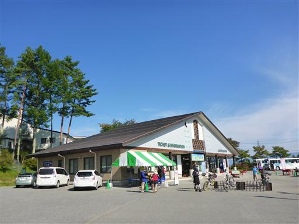
駐車場からは八ヶ岳の眺めが良い。
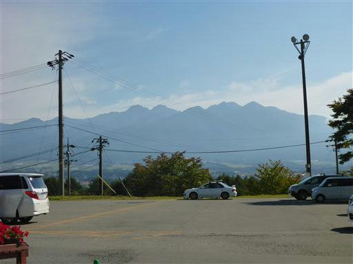
ゴンドラ乗り場から少し離れた駐車場に車を停めてしまったため、乗り場まで歩いていく。
ゴンドラは先ほど動き始めたようだ。
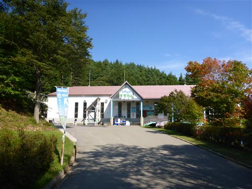
ここはマウンテンバイクのフィールドとして有名。
自転車を持って列に並んでいる人も結構いる。
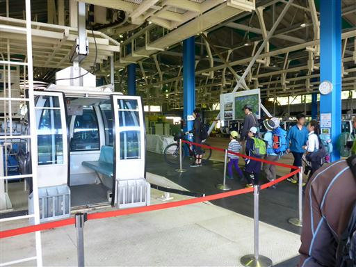
ゴンドラに乗って一気に標高をかせぐ。
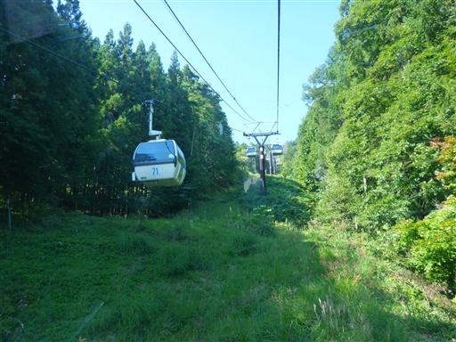
窓からは雄大な八ヶ岳の姿が見えてくる。
八ヶ岳の南端から北は蓼科山まで、全てを見渡すことができる。
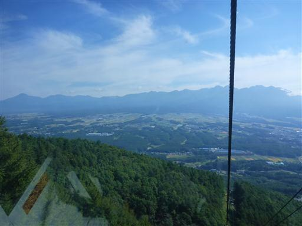
ゴンドラを降りたら登山開始。ここの標高はすでに1780mだ。
辺りの木々の葉は色づき始めている
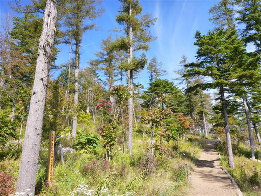
周囲は秋の花に彩られている。まずはヤマハハコがお出迎え。
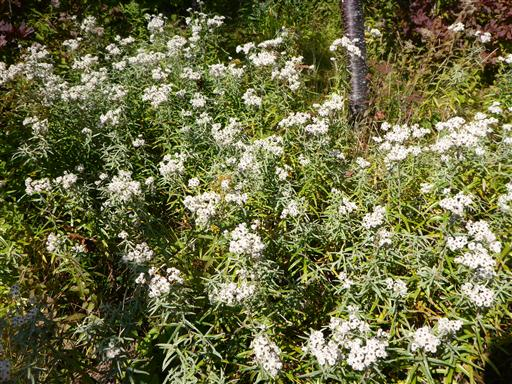
エンビセンノウ。赤くてよく目立つ。分布域が小さい希少種だ。
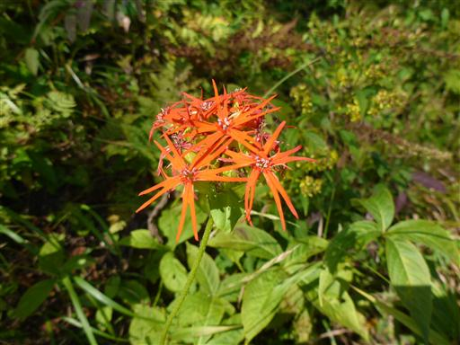
しばらく歩くと花がなくなり針葉樹林と笹原の中の道となる。
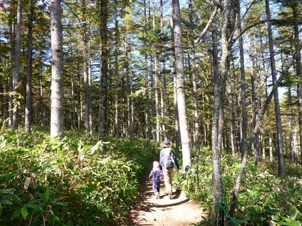
入笠湿原の入口に到着。動物除けの大きな扉を開けて中に入る。
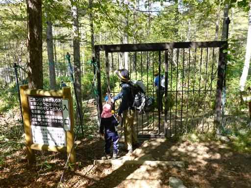
小さな橋を渡ると入笠湿原だ。
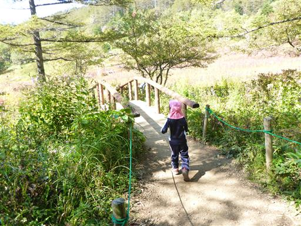
それほど広い湿原ではないが、美しい景観が広がる。周囲は完全に秋色だ。
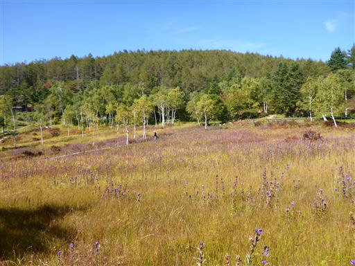
湿原に伸びる木道を歩く。少し奥の方の道に入ると人通りは少なくなる。
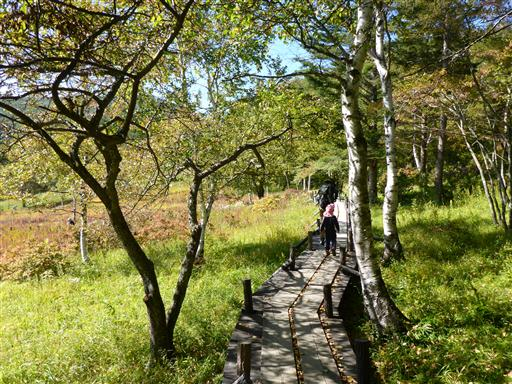
湿原には一面青い花が咲き乱れている。
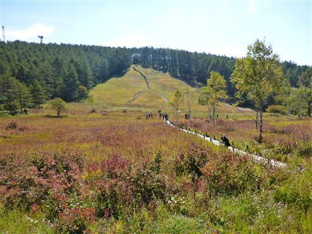
咲いているのはエゾリンドウ。秋の花の代表だ。
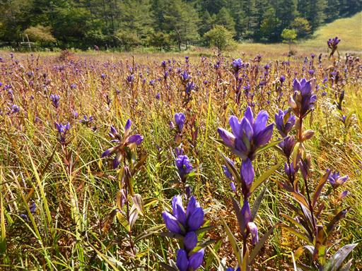
シシウドだろうか？なかなか美しい姿だ。
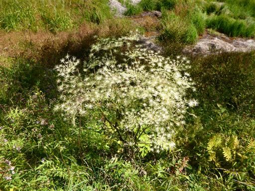
全体的にカラッとした湿原だが、一部水がたまっているところもある。
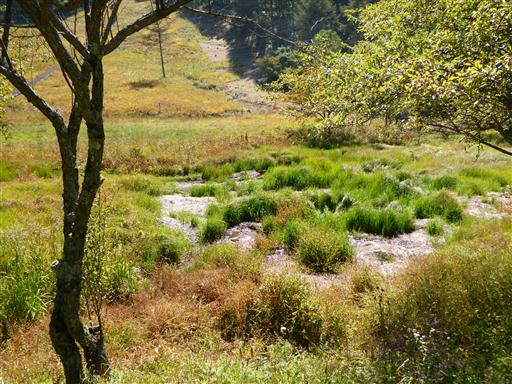
入笠湿原の入口に大きな案内板がある。我々は裏口から入ってきたようだ。
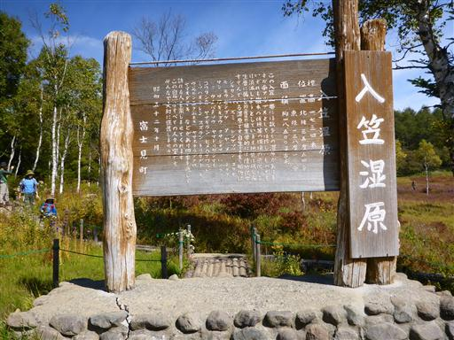
側には立派な山荘もある。
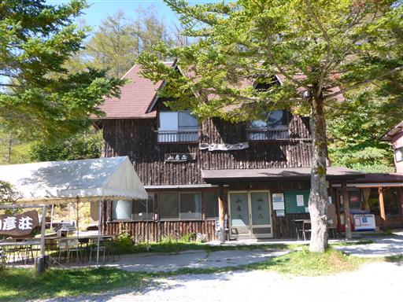
小さな川が入笠湿原に流れ込んでいる。
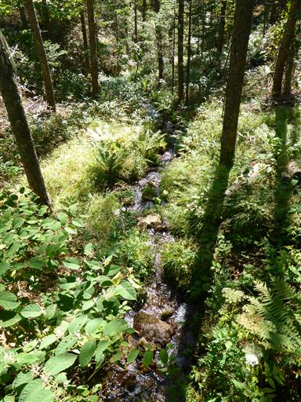
車道と合流。マイカー規制になっていると思っていたが、ここまではマイカーで入れるようだ。
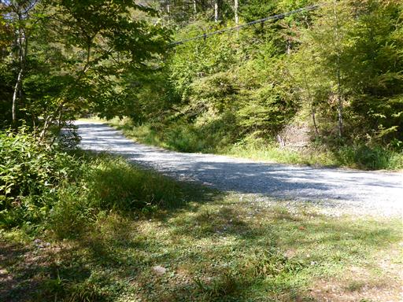
ありがたいことに車道と並行して遊歩道が整備されているため、車道を歩く必要はない。
沢沿いの非常に美しい道だ。
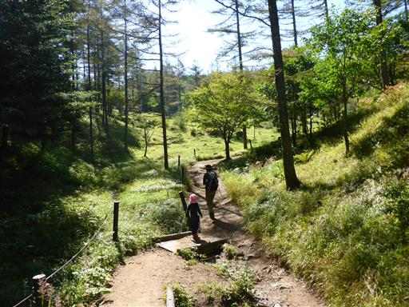
再び車道と合流する。マイカー規制はこの先のようだ。
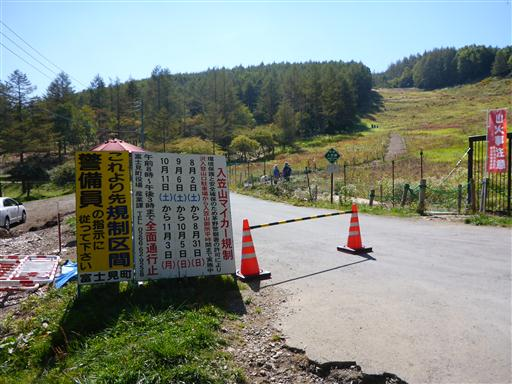
ここから先にもお花畑が広がる地帯がある。再び扉を開けて中に入っていく。
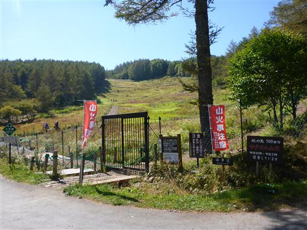
ここの景色も素晴らしい。斜面の中にジグザグに付けられた道をゆっくりと登って行く。
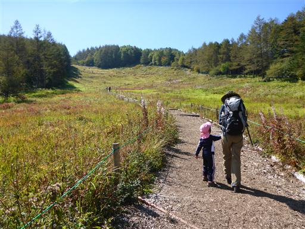
ハクサンフウロ。
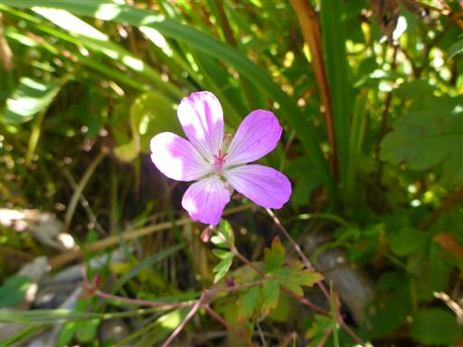
ツリガネニンジン。
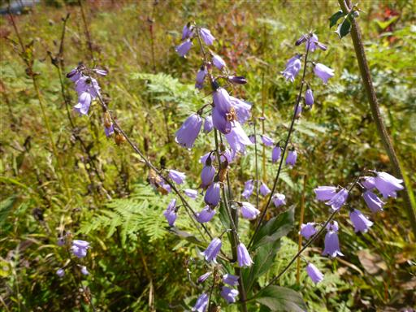
アキノキリンソウ。
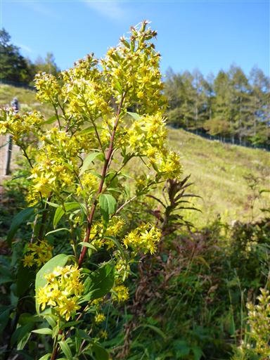
ヤナギランの綿毛。触るとふわふわだ。
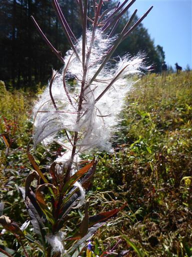
ゴマナ。
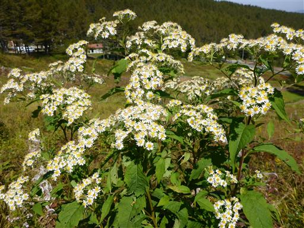
道にはチップが敷き詰められていて足に優しい。
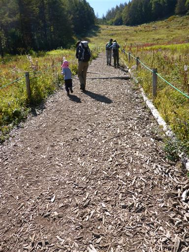
咲き誇る花々を眺めながら歩く。
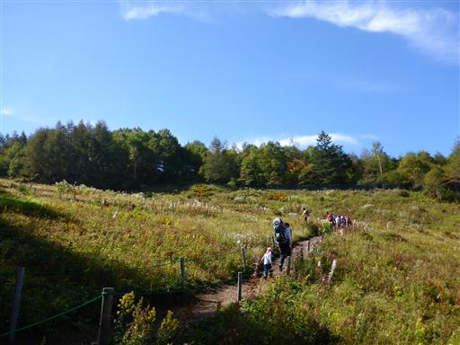
お花畑をすぎて扉を出ると、ようやく道は登山道らしくなってくる。
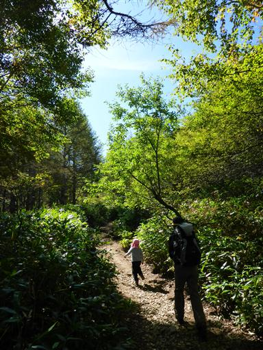
途中で道は二手に分かれる。右手は岩場コース、左手は簡単コースだ。
右のコースを行くことにする。
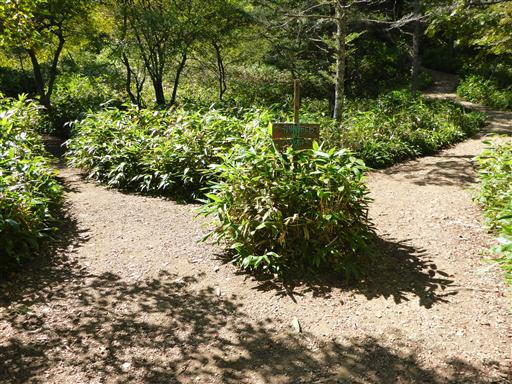
途中で北アルプスの展望が広がる。今日は空気がきれいで、槍ヶ岳や穂高岳がくっきり見える。
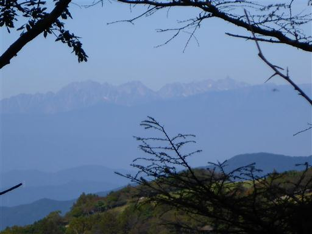
ここが岩場。鎖があるが、使わなくても一歩で登れる簡単な岩場だ。
娘も岩にしがみついて頑張って登っている。
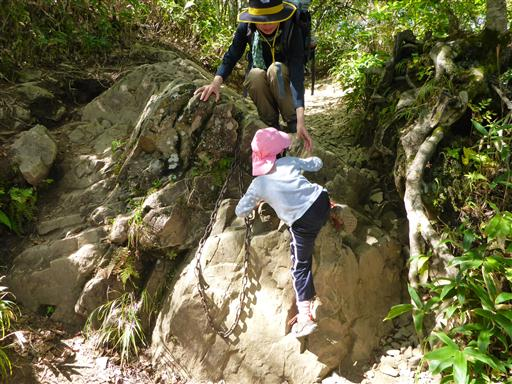
樹林帯を抜けると山頂の一角に到達し、一気に展望が広がる。
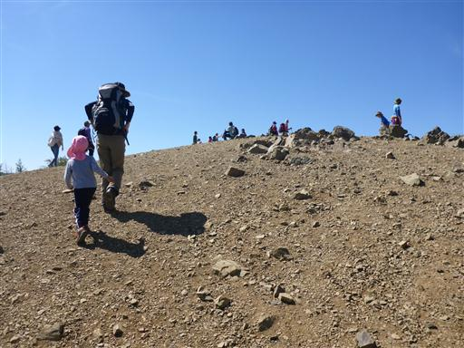
入笠山山頂に到着。標高1955m。
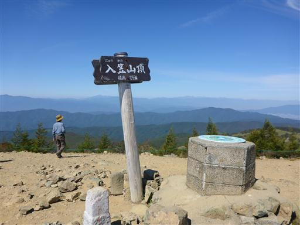
山頂は360度の大展望台。まず目に飛び込んでくるのは八ヶ岳。
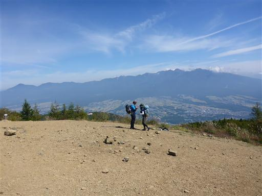
比較的近くにある八ヶ岳は赤岳の荒々しい岩壁まではっきり見える。
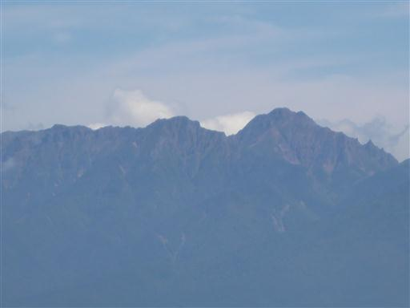
中央アルプス。今年の夏に行きそびれた木曽駒ヶ岳も見えている。
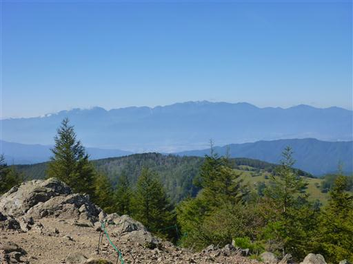
南アルプスの一角にある山だが、南アルプス中心部の山々は案外遠い。
甲斐駒ヶ岳や仙丈ヶ岳のシルエットが見えている。
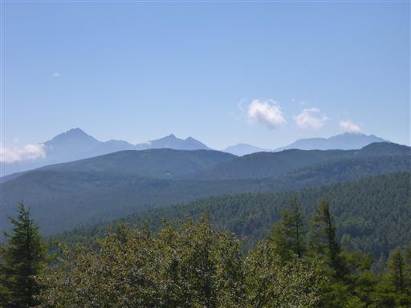
北アルプス。穂高岳から遠く白馬岳の方まで、ズラッと山が並んでいる。
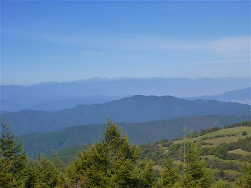
北アルプスの左にはどっしりとした御嶽山。
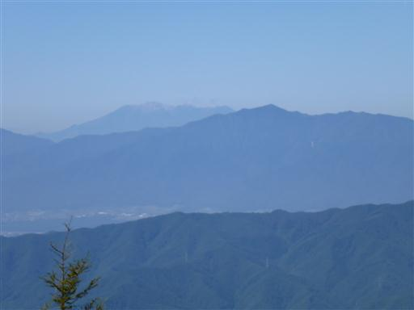
美ヶ原、霧ヶ峰の方面。こちらの山々は平べったくて目立たない。
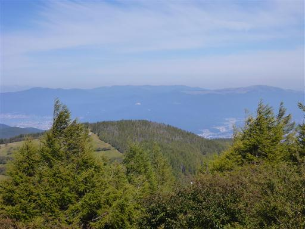
しばらくすると、遠く富士山まで見えてくる。
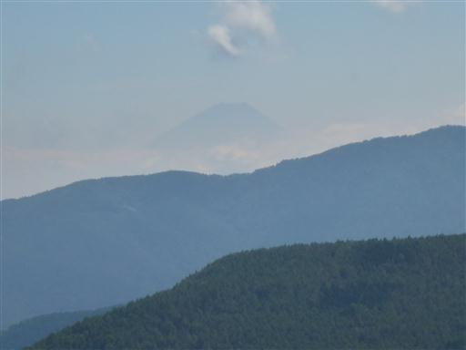
息子は昼食が終わると岩に登って遊んでいる。
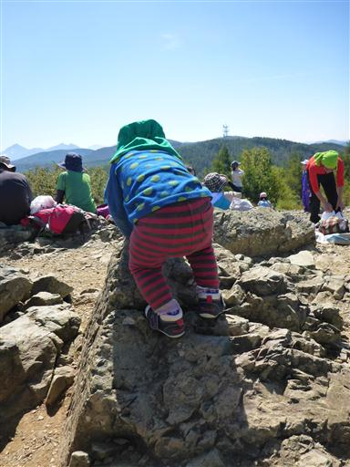
大展望を満喫したら下山開始。
娘は鼻に虫が入って噛まれたようで大号泣。ここからグズグズになってしまった…
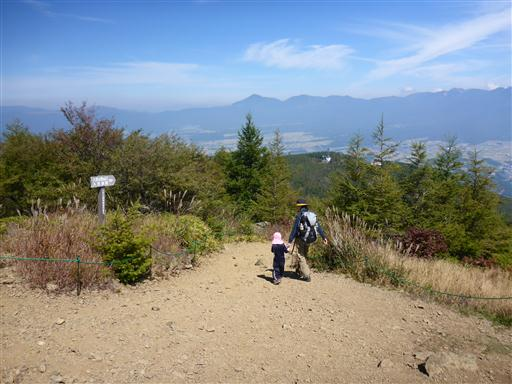
入笠湿原に戻ってくる。来た道と違う道を歩こうと考え、別の道を歩いていくと、
扉に「ゴンドラ駅には行けません」と記載されている。
こういう情報は道の分岐点に出しておいてほしかった。
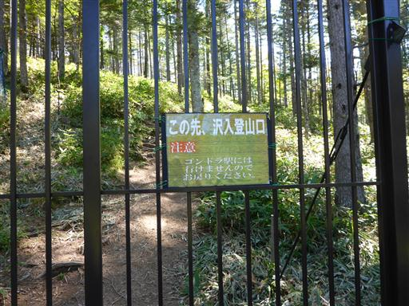
もう一つの道は高台を超えていく必要がある。
仕方がないので長い階段を上っていく。6月にはこの斜面にスズランの大群落が見られるらしい。
高台から湿原を見下ろす。
高台の上部には巨大なアンテナが建っている。
ぐるっと一周まわって登山道入口に戻ってくる。
少し休憩してソフトクリームを食べることにする。
八ヶ岳を眺めながらソフトクリームを食べる。
近くに入笠牧場があることもあり、非常においしかった。
ゴンドラ山頂駅の付近にもお花畑がある。こちらはワレモコウ。
この辺りのお花畑は人為的に整備されているようだ。
ゴンドラに乗って下山する。
乗る際に何とおしぼりを渡される。なかなかサービスが良い。
ここは、冬はスキー客、夏は登山客やマウンテンバイクの客が集まり、商業的によく成功している。
ゴンドラから下を眺めると、コース上を走るマウンテンバイクが見られる。
美しい湿原、素晴らしい展望が広がる、充実した山行だった。